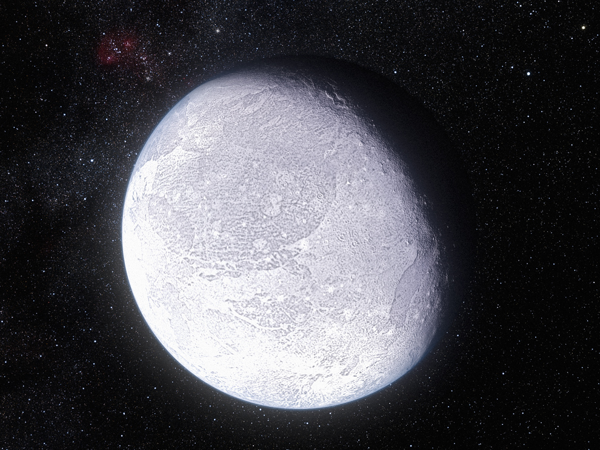

- Représente 99% de la masse totale du système solaire
- Température au centre: 15 099 726°C
- Température à la surface: 5476°C
- Son atmosphère est appelée la couronne
- Température de la couronne: 4 999 726°C
Système solaire interne
Le système solaire interne est composé de notre soleil ainsi que Mercure, Vénus, la Terre et Mars. Le système solaire interne est délimité par la ceinture d'astéroïdes, située entre Mars et Jupiter.
Le Soleil
Mercure
- La plus petite planète du système solaire
- N'a absolument aucune atmosphère
- Effectue une rotation autour du soleil en 88 jours
- La température moyenne de mercure se situe à 179°C
Vénus
- Taille similaire à celle de la Terre
- Une atmosphère très épaisse: plus de 100x massive que celle de la Terre
- Son atmosphère tourne en sens inverse de la planète en 4 jours seulement
- La température moyenne de Vénus se situe à 467°C
- Son atmosphère est composée entre autre de CO2 et de méthane qui provoque l'effet de serre et en fait la planète tellurique la plus chaude du système solaire
- La température moyenne de Vénus se situe à 467°C
La Terre
- Seule planète connue qui arbore la vie
- Composée à 72% d'eau
- En son centre, il y a un noyeau composé de fer. C'est d'ailleurs la raison pour laquelle les minéraux valent chers: ils sont durs à extraire puisqu'ils descendent ver le noyau
- Son atmosphère et son champs magnétique nous protège des rayons dommageable du soleil
Mars
- N'a quasiment plus aucune activité géologique
- Elle a la même période de rotation
- Étant inclinée comme la Terre, Mars a des saisons semblables à celle-ci
- A une couleur rouge dû à l'abondance d'oxyde de fer
- Il y a des tempêtes de poussières pouvant recouvrir toute la planète
- La température moyenne au sol de Mars se situe à -63°C
Système solaire externe
Le système solaire externe est composé des géantes gazeuses: Jupiter, Saturne, Uranus et Neptune. Auparavant, Pluton était comptée comme une planète mais a été déclassé au rang de planète naine.
Jupiter
- La plus grande planète du système solaire
- Elle est plus volumineuse et massive que toutes les autres planètes du système solaire réunies
- 4e objet le plus brillant dans le ciel la nuit
- Une tempête, la Grande Tâche rouge, a une largeur de 12000km par 25000km. On l'aurait observée aussi tôt qu'en 1665.
Saturne
- Une géante gazeuze, elle a un diamètre 9 fois et demi plus grand que celui de la Terre
- C'est la plus lointaine des planètes observable à l'oeil nu, la nuit
- Elle est considérée comme étant la plus belle planète du système solaire, entre autre grâce à ses importants anneaux
- Ses anneaux sont formés de petites particules de glace allant de la taille d'un grain de riz à la taille d'une voiture
- Ses anneaux sont visibles de la Terre, en utilisant seulement une paire de jumelles
Uranus
- Une planète géante de glace, son atmosphère est composée en grande partie d'eau, de glace et de méthane
- Elle a une des atmosphères les plus froides à -224°C
- Les vents d'Uranus peuvent atteindre des vitesses de 900 km/h
- Uranus a aussi des anneaux, toutefois beaucoup plus petits que ceux de Saturne
Neptune
- Neptune est la première planète à avoir été identifiée par des calculs plutôt que par observation directe
- Elle a les vents les plus rapides du système solaire: ils peuvent aller jusqu'à 2000 km/h
- C'est aussi la plus froide: -235°C
Planètes naines
La classe des planètes naines a été créée pour ces planètes qui sont trop petites pour être un planète à part entière mais trop grosse pour être un astéroïde.
Pluton

Eris

Ceres